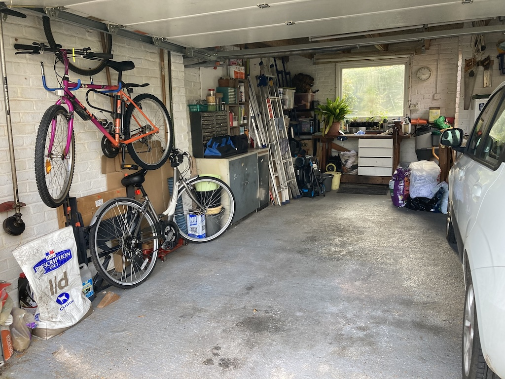
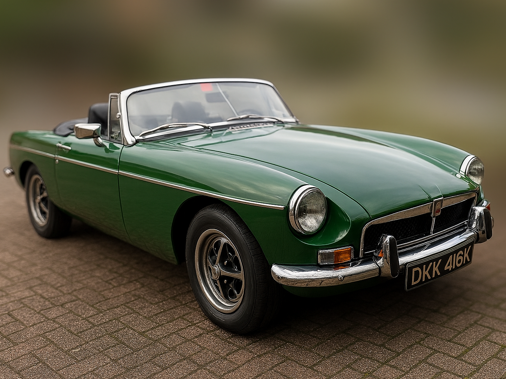

There was a car-sized space in our garage. It came about, of course, by the departure of our MG TC to the Netherlands, but it was crying out to be filled.
I'd sold the TC for a number of reasons. Angela worried when I was out in it and felt unsafe as a passenger. That was understandable since there were no seat belts, the seat squab and seat back gave no lateral support, the car 'bounced' over bumps and the non-collapsible steering column was just a few inches from my chest. I was also finding that getting the car up on axle stands and crawling around on the garage floor was becoming more difficult. Don't get me wrong, I thoroughly enjoyed the mechanical and electrical work that I did on the car. It was just becoming a bit harder.
So it was time to find a car on which I could do small jobs so as to improve it, but one that would be easier to get any major work done by a repair shop. Also, and perhaps most importantly, a car that I could enjoy driving more often and on longer trips. Other TC owners take their cars all over the country and, indeed, Europe, but I lacked the confidence to do more than the South Downs Run.
When I first joined the West Sussex MG Owners Club, some ten years ago, it was so as to learn more about the car from other owners. But there weren't any. The Chairperson had a TA, but that was the only T-Type MG in the club and there are major differences between the two models. The Sussex Wanderers, who meet monthly for a run followed by lunch, was a better source of information, since one other TC was often present. However, an online forum, mg-tabc, was probably the best source of information and of contacts, even though many of the regular contributors were in the USA.
But coming back to that space in the garage. You can see from the photo with what I decided to fill it. I'd always liked the B Roadster, but had been prevented from getting one in the 1980s by us 'inheriting' a Mark I Triumph Spitfire (simply known as a Sptifire 4). Also at that time those B owners who I knew were having new sills fitted, the originals having rusted away!
So I set about seeing what was on the market. My basic requirement was a Mark III MGB with overdrive. On top of that there were some 'nice to haves'. Our TC had been built in 1948, the year that we were both born, so if the B was made in 1972, the year we were married, then so much the better. I've always liked the B in green and if the upholstery was dark brown (Autumn Leaf) then that would be good. Wire wheels would be nice too, although the RO-style (Rubery Owen) steel wheels, introduced with the Mark III, also look good and are perhaps a little more practical.
It turned out that there are a lot of Mark III MGBs on the market, ranging in price from £6,000 to £24,000, but only a few that were built in 1972 and painted green. There was one in green with Autumn Leaf upholstery, but the photos showed a lot of rust and it was in Birmingham! To my surprise, however, Milestone Classics at Wisborough Green had a 1972, green roadster for sale. The rest is history.
So I now have a new 'toy' to explore, work on, understand and drive. There is also a large file full of invoices to wade through and I will try to unearth as much of the car's history as I can. Just as our TC has its own web page, so I will start writing one for the B. Watch this space.